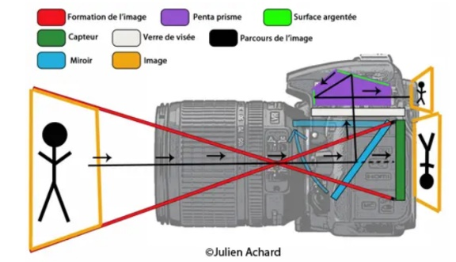
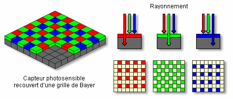
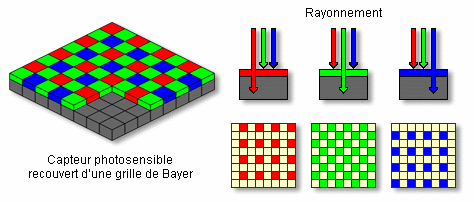
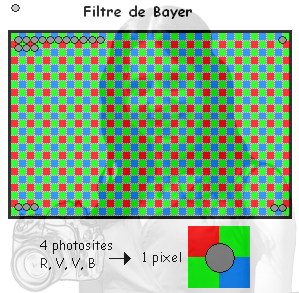

Du capteur CCD au fichier image
Principe d’un appareil photo numérique
Formation d’une image sur une surface photosensible
 Un appareil photo est composé d’une lentille qui va former une image réduite sur une surface photosensible. Autrefois, la surface photosensible était une pellicule photographique argentique, au- jourd’hui la pellicule est remplacée par un capteur CCD ou un capteur CMOS.
Un appareil photo est composé d’une lentille qui va former une image réduite sur une surface photosensible. Autrefois, la surface photosensible était une pellicule photographique argentique, au- jourd’hui la pellicule est remplacée par un capteur CCD ou un capteur CMOS.
Un capteur CCD est une surface photosensible composée d’un grand nombre de photosites. Plus l’in- tensité lumineuse reçue par le photosite est importante plus le photosite produira une tension électrique importante (effet photoélectrique). Cette tension électrique sera ensuite "convertie" en un nombre (on parle de numérisation) qui sera fonction de la quantité de lumière reçue.
Nécessité d’une matrice de Bayer
Si l’on se contentait de ce système, nous aurions uniquement des images en niveau de gris. Afin de pouvoir gérer les couleurs, on rajoute un filtre coloré devant chaque photosite. On utilise des filtres rouges (qui ne laissent passer que le rouge), des filtres verts et des filtres bleus qui correspondent aux 3 couleurs primaires.
 

L’image ci-dessus montre que les matrices dites "de Bayer" sont constituées de 50% de filtres verts, de 25% de filtres rouges et de 25% de filtres bleus. Cette répartition est adaptée à la physiologie de l’oeil humain qui est nettement plus sensible à la couleur verte qu’aux cou- leurs bleue et rouge. L’association de 4 photosites (deux verts, un rouge et un bleu) permettra de fournir les informations de couleur d’un pixel de l’image.
2) Les caractéristiques d’une image
La définition d’une image
La définition d’une image correspond au nombre de pixels qui la composent. Une image ayant une définition de 4000×3000 est composée de 4000 pixels en largeur et de 3000 pixels en hauteur, soit en tout 4000× 3000 = 12 millions de pixels=12 M pixels
La résolution
La résolution d’une image est le nombre de pixels par unité de longueur . Elle s’exprime en pixels par pouce (ppp), en anglais en dots per inch (dpi). Sachant qu’un pouce mesure 2,54 cm, une résolution de 2400 ppp signifie que l’image a une définition de 2400 points sur une longueur de 2,54 cm.
Remarque : la résolution de l’image ne doit pas être confondue avec la résolution du capteur (en nombre de photosites par pouce) qui est généralement bien plus grande que la résolution de l’image.
Exercice 1 : Soit une image de définition 4000× 6000 pixels que l’on imprime sur du papier photo de taille 19,8 cm × 29,7 cm. Calculer la résolution de cette image en pixels par cm puis en pixels par pouce (ppp).
Exercice 2 : Calculer la résolution d’un capteur plein format (24 mm x 36 mm) qui a permis de saisir l’image de définition 4000 × 6000 pixels mentionnée dans la question Q1. Comparer les 2 résolutions.
Exercice 3 : Sachant que l’on estime que pour avoir une impression de qualité il faut atteindre une résolution de 300 ppp, calculer la définition minimale d’une image dans le cas d’une impression sur du papier photo de dimensions 10 cm × 15 cm.
Exercice 4 : Écrire un programme qui :
- demande à l’utilisateur la largeur ou la hauteur de l’écran ou de la feuille ;
- demande ensuite à l’utilsateur le nombre de pixels correspondant à la dimension ci-dessus ;
- calcule la résolution en ppp puis en pixel/cm ;
- qui affiche la résolution en ppp puis en pixel/cm.
La profondeur de couleur
Exercice 5 : Les 3 composantes RVB suffisent-elles à décrire la palette complète des couleurs visibles ?
Exercice 6 : Combien peut-on coder de couleurs sur 2 bits ? sur 3 bits ? ... sur 8 bits ?
Exercice 7 : Combien de couleurs peut on coder avec une profondeur de couleur de 24 bits ?
Exercice 8 : Quels seraient les avantages et les inconvénients d’utiliser une profondeur de couleur plus importante ?
La taille d’une image
La taille de l’image correspond au nombre d’octets qu’occupe le fichier de l’image lors de son stockage.
Exercice 9 : Comment peut-on calculer la taille de l’image si elle n’est pas compressée ?
Les métadonnées EXIF
Une image numérique n’est pas qu’une liste de pixels. C’est aussi un fichier qui peut contenir des infor- mations diverses : les métadonnées EXIF (Exchangeable Image File Format). Un moyen simple de lire ces métadonnées est d’effectuer un clic droit sur l’image depuis l’explorateur de fichier et de sélectionner "propriétés".
Exercice 10 : Quels types d’informations renferment les métadonnées ?
Exercice 11 : Pourquoi les métadonnées peuvent-elles s’avérer... sensibles ?